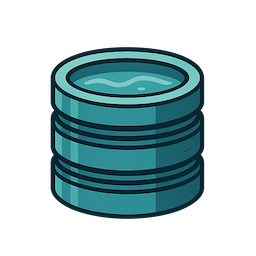

Introduction
Reservoir is first and foremost a memory system for interactions with large language models, designed to build a Retrieval-Augmented Generation (RAG) database of useful context from language model interactions over time. It maintains conversation history in a Neo4j graph database and automatically injects relevant context into requests based on semantic similarity and recency. Reservoir can also act as an optional stateful proxy server for OpenAI-compatible Chat Completions APIs.

Problem Statement
By default , Language Model interactions are stateless. Each request must include the complete conversation history for the model to maintain context. This creates several technical challenges:
- Manual conversation state management: Applications must implement their own conversation storage and retrieval systems
- Token limit constraints: As conversations grow, they exceed model token limits
- Inability to reference semantically related conversations: Previous relevant discussions cannot be automatically incorporated
- No persistent storage: Conversation data is lost when applications terminate
Technical Solution
Reservoir addresses these limitations by acting as an intermediary layer that:
- Stores all messages in a Neo4j graph database with full conversation history
- Computes embeddings using BGE-Large-EN-v1.5 for semantic similarity calculation
- Creates semantic relationships (synapses) between messages when cosine similarity exceeds 0.85
- Automatically injects relevant context into new requests based on similarity and recency
- Manages token limits through intelligent truncation while preserving system and user messages
Architecture Overview
Reservoir is a command line tool that intercepts API calls, enriches them with relevant context, and forwards requests to the target Language Model provider. It can also run as an HTTP proxy, acting as an intermediary between clients and API endpoints. All conversation data remains local to the deployment environment.
Data Model
Conversations are stored as a graph structure:
- MessageNode: Individual messages with metadata and embeddings
- EmbeddingNode: Vector representations for semantic search operations
- SYNAPSE: Relationships between semantically similar messages
- RESPONDED_WITH: Sequential conversation flow relationships
- HAS_EMBEDDING: Message-to-embedding associations
Supported Providers (Proxy Mode)
The system supports multiple Language Model providers through a unified interface:
- OpenAI (gpt-4, gpt-4o, gpt-3.5-turbo)
- Ollama (local model execution)
- Mistral AI
- Google Gemini
- Any OpenAI-compatible endpoint
Implementation Details
The server initializes a vector index in Neo4j for efficient semantic search and listens on a configurable port (default: 3017). Conversations are organized using a partition/instance hierarchy enabling multi-tenant isolation.

Use Cases
- Stateful chat applications: Eliminate manual conversation state management
- Cross-session context: Maintain context across application restarts
- Semantic search: Retrieve relevant historical conversations
- Multi-provider workflows: Maintain context when switching between Language Model providers
- Research and development: Build persistent knowledge bases from Language Model interactions
For implementation details, see the Quick Start guide.